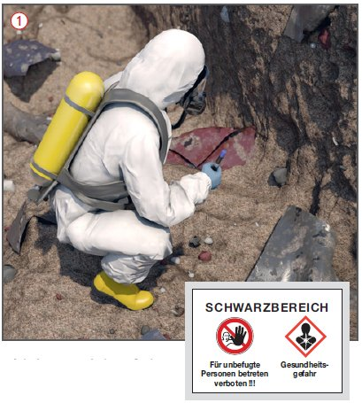
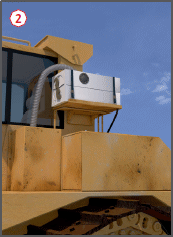

Arbeiten in kontaminierten Bereichen
|
|

Gefährdungen
- Durch Gefahrstoffe oder biologische Arbeitsstoffe kann es zu Gesundheitsschäden kommen.
Allgemeines
- Arbeiten in kontaminierten Bereichen nach DGUV Regel 101-004 "Kontaminierte Bereiche" bzw. TRGS 524 sind Bau- bzw. Sanierungsarbeiten inkl. der vorbereitenden Arbeiten in Bereichen, die mit Gefahrstoffen oder biologischen Arbeitsstoffen verunreinigt sind.
- Dies können z. B. sein:
- Bauarbeiten auf Altlasten, Deponien oder entsprechend belasteten Industrie- oder Gewerbeflächen,
- Rückbau von Industrieanlagen und entsprechend belasteter Gebäude,
- Tätigkeiten mit biologischen Arbeitsstoffen bei Arbeiten auf Deponien und bei der mikrobiologischen Bodensanierung,
- vorausgehende Arbeiten zur Erkundung von Gefahrstoffen,
- Arbeiten zur Brandschadensanierung,
- Tätigkeiten mit Gefahrstoffen, die aus Kampfmitteln stammen,
- Tätigkeiten mit Gebäudeschadstoffen im Sinne der TRGS 524.
- Werden bei Bauarbeiten zuvor unbekannte Kontaminationen angetroffen, sind unverzüglich folgende Maßnahmen zu treffen:
- Arbeiten sofort einstellen,
- Gefahrenbereich verlassen und sichern,
- ggf. Abdecken der kontaminierten Bereiche,
- Aufsichtführenden verständigen,
- Auftraggeber und zuständige Berufsgenossenschaft informieren.
- Arbeiten erst wieder aufnehmen, wenn durch den Bauherrn die Situation geklärt ist bzw.der Arbeits- und Sicherheitsplan vorliegt.
- Wenn keine ausreichenden Informationen über Stoffe und die von ihnen ausgehenden Gefahren vorliegen, Maßnahmen auf den ungünstigsten Fall ausrichten.
Planungs- und Organisationsaufgaben des Bauherrn
- Erarbeiten eines Arbeits- und Sicherheitsplans (A+S-Plan) durch Sachkundigen nach DGUV Regel 101-004:
- Angaben zu Art und Konzentration der Gefahrstoffe bzw. biologischen Arbeitsstoffe,
- Ermittlung der zu erwartenden Gefahren (Mobilität, gefährliche Eigenschaften, Wirkungen),
- Ermittlung der auszuführenden Tätigkeiten,
- Gefährdungsbeurteilung,
- Beschreibung geeigneter Schutzmaßnahmen,
- bei hoher Gefährdung A+S-Plan mit Fach- und Aufsichtsbehörden abstimmen,
- Ausschreibung lt. A+S-Plan.
- A+S-Plan für Erkundungsarbeiten auf der Grundlage der gemäß historischer Erkundung zu vermutenden Stoffe erarbeiten
 .
.
- Sind Beschäftigte mehrerer Unternehmen im kontaminierten Bereich tätig:
- nach DGUV Regel 101-004 sachkundigen Koordinator bestellen,
- Koordinator mit Weisungsbefugnis gegenüber allen Unternehmern und deren Beschäftigten ausstatten.

Baustelleneinrichtung
- Baustelle in Schwarz- und Weißbereiche einteilen.
- Bei Tätigkeiten mit Gebäudeschadstoffen ggf. Abschottungen (Folienwände, -schleusen) und Unterdruckhaltung vorsehen.
- Baustelle und Schwarzbereiche durch Einzäunung oder gleichwertige Maßnahmen gegen unbefugtes Betreten sichern.
- Dekontaminationseinrichtungen vorsehen:
- Schwarz-Weiß-Anlage,
- Stiefelwaschanlagen,
- Reifenwaschanlagen für Fahrzeuge.
- Verständigungsmöglichkeit zwischen Schwarz- und Weißbereich gewährleisten.
- Sozialräume, Unterkünfte usw. nur im Weißbereich.
- Für kontaminierte Geräte etc. Lagerraum innerhalb des Schwarzbereiches vorsehen.
Schutzmaßnahmen
- Rangfolge der Schutzmaßnahmen im A+S-Plan beachten:
1. Arbeitsverfahren
- Möglichst emissionsarmes Verfahren auswählen.
2. Technische und organisatorische Schutzmaßnahmen
- Emission an der Austrittstelle erfassen bzw. für ausreichende Belüftung des Arbeitsbereiches sorgen.
- Einsatz von Fahrzeugen und Erdbaumaschinen, die mit Anlagen zur Atemluftversorgung (Filter- oder Druckluftanlagen) ausgestattet sind
 .
.
- Besondere Baustelleneinrichtung vorsehen.
- Tragezeiten und tragefreie Zeiten der PSA in der Planung berücksichtigen (Auswirkungen auf Bauzeit beachten!).
- Reinigung, Wartung und Pflege von mehrfach verwendbarer PSA organisieren (Atemschutzgeräte!).
- Messkonzept erstellen.
3. Persönliche Schutzausrüstung beschreiben
- Schutzhandschuhe, Fußschutz, Schutzkleidung und Atemschutz nach Eigenschaften der Gefahr-/Biostoffe und zu erwartender Exposition/Gefährdung .
Aufgaben des ausführenden Unternehmens
- Arbeitsverfahren festlegen.
- Gefährdungsbeurteilung auf der Grundlage des A+S-Plans des Auftraggebers durchführen.
- Schutzmaßnahmen festlegen.
- Rangfolge der Schutzmaßnahmen (s.o.) beachten.
- Baustelleneinrichtung und Ausrüstungen bereitstellen.
- Bei Tragen von Schutzkleidung und Atemschutz Tragezeiten und tragefreie Zeiten festlegen.
- Für Arbeiten unter Atemschutz gerätespezifische Unterweisungen gemäß DGUV Regel 112-190 durchführen.
- Alleinarbeit vermeiden.
- Tätigkeitsbezogene Betriebsanweisungen erstellen.
- Beschäftigte vor Beginn der Arbeiten über besondere Gefahren und den Gebrauch der Schutzausrüstungen unterweisen.
- Unterweisung schriftlich bestätigen lassen.
- Erste-Hilfe bereitstellen:
in jeder Gruppe (zwei oder mehr Beschäftigte) mindestens ein Ersthelfer.
- Hautreinigung und -pflege sicherstellen durch Bereitstellen geeigneter Hautmittel.
Zusätzliche Hinweise zu Anzeigepflichten
- Arbeiten spätestens 4 Wochen vor Beginn der zuständigen Berufsgenossenschaftschriftlich schriftlich anzeigen (Inhalte der Anzeige siehe DGUV Regel 101-004 Anhang 1).
Zusätzliche Hinweise zur Sachkunde/Fachkunde
- Die nach der DGUV Regel 101-004 Kontaminierte Bereiche "Anhang 6 A bzw. 6 B" erworbene Sachkunde für Sicherheit und Gesundheitsschutz bei der Arbeit in kontaminierten Bereichen erfüllt die Fachkundeanforderungen nach Anlage 2 A bzw. 2 B der TRGS 524.
Arbeitsmedizinische Vorsorge
- Arbeitsmedizinische Vorsorge nach Ergebnis der Gefährdungsbeurteilung veranlassen (Pflichtvorsorge) oder anbieten (Angebotsvorsorge). Hierzu Beratung durch den Betriebsarzt.
- Biomonitoring mit Betriebsarzt abstimmen.
07/2021